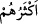

Fir’avn arasında meydana gelen her şeye işâretse de kurtarma ve suda boğma
dışındakiler de boğulanlar için bir âyettir. Böylece âyetin kendisinden sonrasıyla tam
bir uyum meydana gelir. İyi anla.
Bazıları “ (çokları)” ifâdesindeki zamirin bizim Peygamberimiz (s.a.)’in
kavmine râci olmasını tercih etmiştir. Buna göre mânâ şöyle olur: Sûrenin başında
zikredilenlerde bir âyet/ibret olduğu gibi bu zikredilenlerde de ibret alanlar için bir
âyet/ibret vardır’ şeklinde olur. Mûsâ ve Fir’avn kıssasını duyan (o zamanki) Mekke
halkının çoğu, düşünmedikleri ve ibret almadıkları için îman etmiş değillerdir. O halde
Fir’avn âilesinin başına gelen mûsîbetin benzerinin kendilerine de ulaşmasından
sakınsınlar. Çünkü Rabbin Azîz’dir; yalanlayanlardan istediği gibi intikam alma
konusunda mutlak gâlibdir. Rahim’dir; rahmeti fazla olandır. Bu yüzden vahiy yoluyla
olan bu büyük âyeti gördükten sonra îman etmemeleri sebebiyle cezayı tam olarak hak
ettikleri halde onlara mühlet verir ve cezalandırmakta acele etmez.
Âyette Hz. Peygamer (s.a.)’i teselli etme vardır. Çünkü ellerinde mûcizeler zuhur
ettiği halde kavminin bunları yalanlamasına üzülüyor, nûr saçan kalbi mahzûn oluyordu.
İşte Allah Teâlâ, kavminin inadına karşı sabırlı olması ve kurtuluşu beklemesi
konusunda önce geçen peygamberlere uyması için bu ve benzeri kıssaları zikretmiştir.
Nitekim “Onların sabrettiği gibi siz de sabredin, onların muzaffer olduğu gibi siz de
muzaffer olursunuz.” denilmiştir.
Hâfız der ki:
Gayb âleminin meleği bana şu güzel müjdeyi verdi:
“İnsan dünyada sürekli mahzun kalmayacak”
Aclûnî, II, 347
ed-Dürru’l-mensûr, VI, 299
Bu bilgiler, İHakkı Bursevî’nin yaşadığı XVIIIyüzyıla âiddir(H.K.Yılmaz)
Mûsâ (a.s.) denize bu künyeyi vermişti.